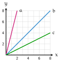

Apartado 9.4
Gráficas de proporcionalidad
9.4.1
Haz una tabla y dibuja la gráfica
- \(y = 3x\)
- \(y = x + 2\)
- \(y = -x\)
¿Cuáles pasan por el origen?
9.4.2
Escribe la expresión de cada recta y comprueba que son de proporcionalidad directa

9.4.3
Sin dibujar, di qué rectas pasan por el origen y cuáles son de proporcionalidad directa
- \(y = 5x\)
- \(y = x - 1\)
- \(y = \frac{1}{2}x\)
- \(y = 3x + 4\)